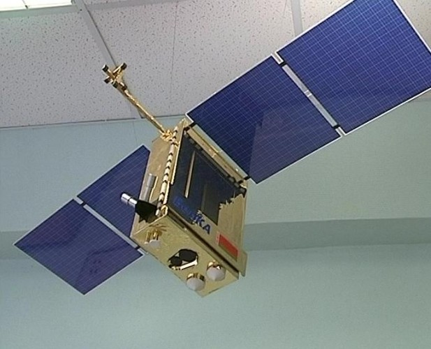
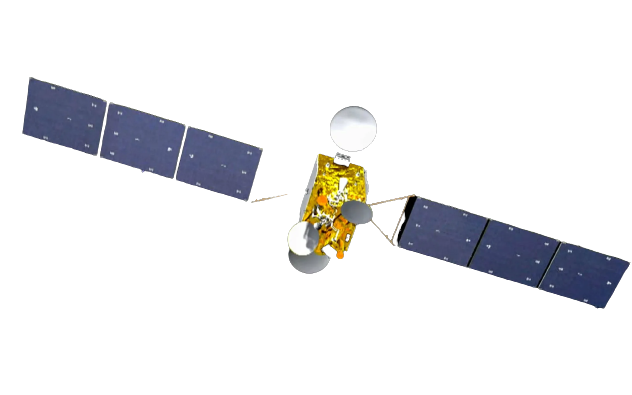
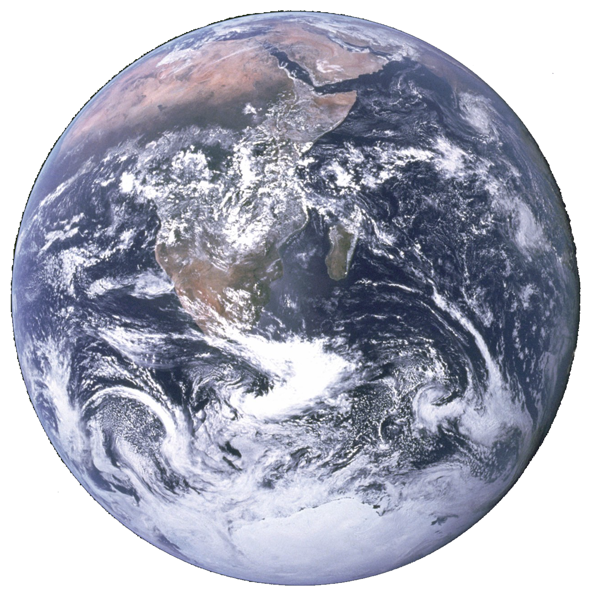
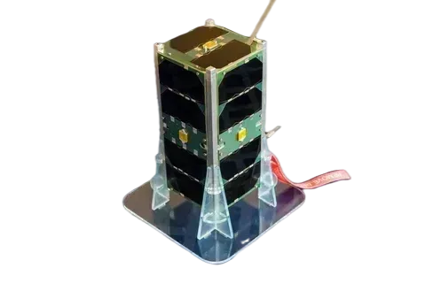
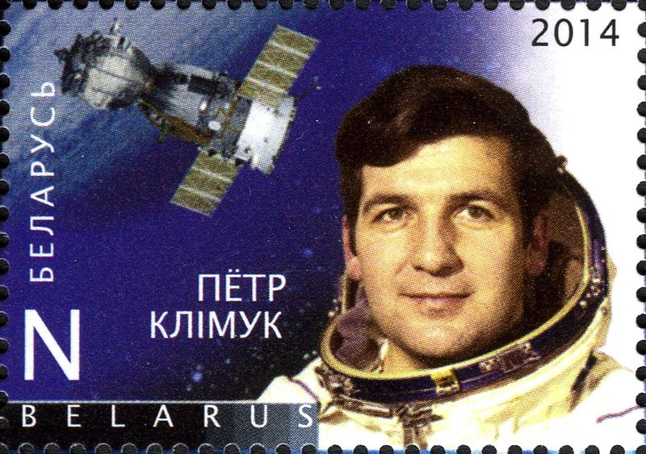

БелКА -2
🛰️Беларуси открылись дороги в космический клуб🚀
Кто первый космонавт суверенной Беларуси?
22 июля 2012 года с космодрома «Байконур» был запущен первый белорусский спутник дистанционного зондирования Земли «БелКА-2».
Он создавался для помощи МЧС и нужд сельского и лесного хозяйства. Первые снимки со спутника стали поступать 29 августа 2012 года.
Спутник «БелКА -2» успешно выведен на орбиту и Республика Беларусь обретает статус космической державы




29 октября 2018 года в 03.43 (по времени Минска) состоялось знаковое событие в истории Белорусского государственного университета.
Спутник БГУ стал первым университетским спутником в системе белорусского образования
и третьим объектом отечественного происхождения на околоземной орбите.

